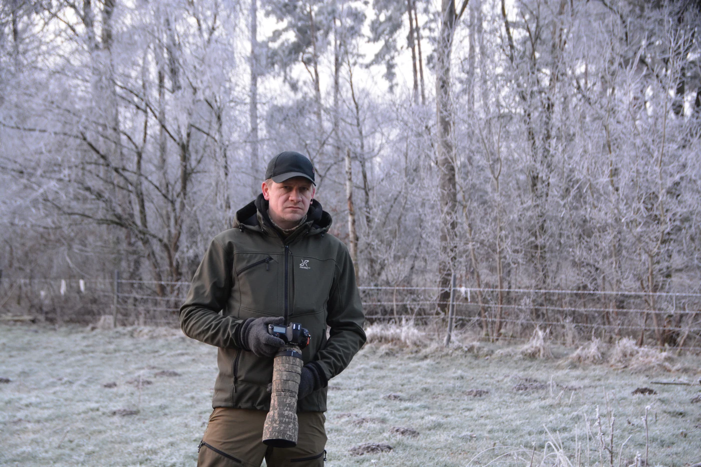
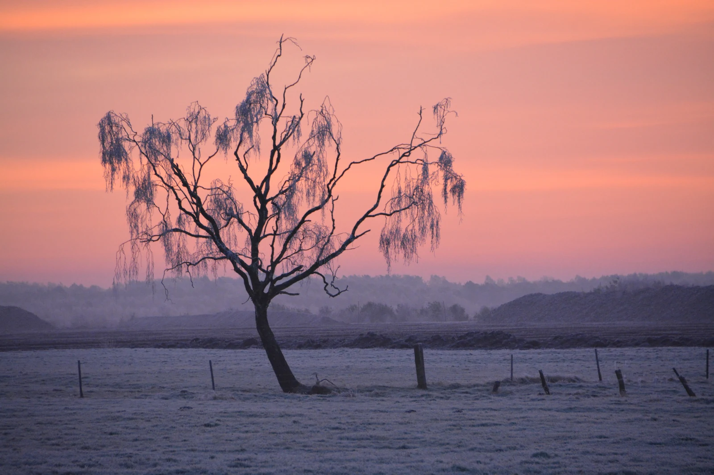

Ich bin Pixlpaule und die Naturfotografie ist für mich mehr als nur das Fotografieren von Tieren.

Schon in meiner Kindheit liebte ich die Natur und verbrachte viel Zeit damit, in Tierbüchern zu lesen. Auch die Fotografie war irgendwie schon immer da. Mein Vater fotografierte selbst und hatte kistenweise Dias. Später begleitete mich die Natur vor allem durch das Angeln weiter.
Vieles davon geriet mit der Zeit etwas in Vergessenheit. Bis mir vor etwa drei Jahren mein Nachbar seine Kamera lieh. Was eigentlich nur ein Ausprobieren war, zog mich ziemlich schnell in den Bann der Fotografie.
Später, mit meiner ersten eigenen kleinen Kamera, fotografierte ich mein erstes Reh. Diese Begegnung hat etwas in mir ausgelöst – ich wollte mehr. Ich wollte Wildtieren näherkommen, sie beobachten, ihr Verhalten kennenlernen und diese besonderen Momente mit der Kamera festhalten.
Mit der Zeit wollte ich nicht mehr nur fotografieren, sondern auch besser verstehen, was hinter einem guten Bild steckt. Deshalb habe ich vor etwa einem Jahr mit dem Lehrstudium „Fotografie – professionell gemacht“ begonnen. Seitdem beschäftige ich mich noch intensiver mit der Fotografie und versuche, das Gelernte bei meinen Touren in der Natur umzusetzen.
Heute sind es vor allem die frühen Morgenstunden, die mich faszinieren. Die Ruhe, der Nebel über den Wiesen und die Ungewissheit, was einem an diesem Morgen begegnen wird. Kein Morgen ist wie der andere – und genau das macht für mich den besonderen Reiz der Naturfotografie aus.
